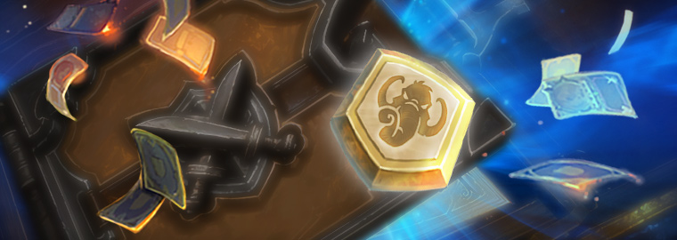
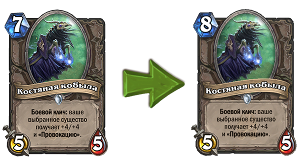
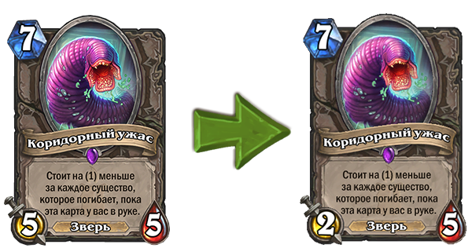
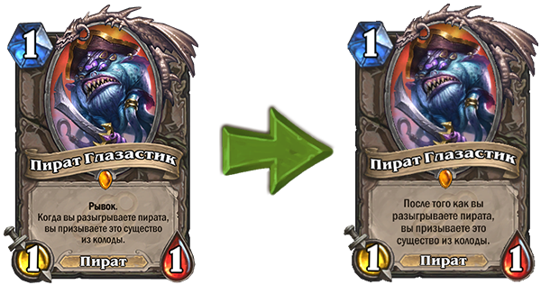
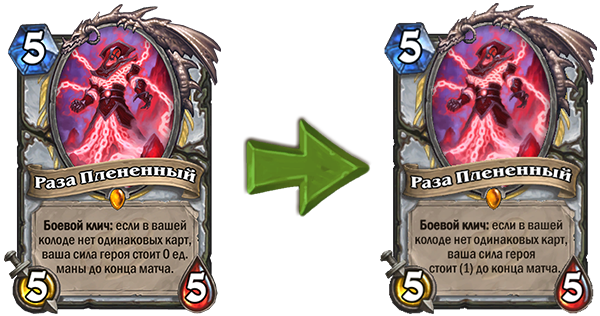

Изменения баланса в обновлении 10.2

В обновлении 10.2 мы внесем в игру изменения для нескольких карт.
«Костяная кобыла» теперь будет стоить 8 маны (вместо 7).

«Костяная кобыла» оказалась довольно сильной картой как в играх с заранее созданной колодой, так и на арене. Она мгновенно и ощутимо влияет на ситуацию в игре, а поскольку это существо нейтральное, оно появляется в самых разных колодах. Теперь, когда стоимость «Костяной кобылы» возросла, у вас будет больше времени, чтобы использовать дорогостоящие карты, которые могут ей противостоять.
«Коридорный ужас»: атака этого существа теперь равна 2 (вместо 5).

Из-за механики снижения стоимости у «Коридорного ужаса» очень много зависит от того, будет ли эта карта в руке в начале игры.
Поскольку это очень сильная нейтральная карта, «Коридорный ужас» стал появляться в колодах многих классов. Уменьшив показатель атаки, мы тем самым снизили эту зависимость и общую эффективность карты, однако у игроков, вытянувших эту карту на начальных этапах игры, по-прежнему будет существо с небольшой стоимостью, которое можно разыграть в подходящий момент.
«Пират Глазастик» больше не обладает свойством «Рывок».

Ближе к новому году в Hearthstone мы стали сомневаться, оставлять ли Глазастика без изменений после перемещения из стандартного формата в вольный. Эта карта настолько сильна, что игроки добавляют нескольких пиратов в колоды практически всех классов, чтобы воспользоваться преимуществами «Пирата Глазастика». А тем, кто играет колодами контроля, приходится разрабатывать особую тактику против пирата, — настолько он эффективен с первых же ходов. Благодаря этому изменению у игроков вольного формата появится больше возможностей при создании колод.
Без «Рывка» Глазастик уже не так силен — в особенности на ранних этапах игры. Так что теперь он станет реже появляться в колодах, а у противника будет больше времени, чтобы отреагировать на появление этой карты на игровом поле.
Описание карты «Раза Плененный» изменено. Боевой клич: если в вашей колоде нет одинаковых карт, ваша сила героя стоит (1) до конца матча.

Насчет Разы мы тоже задумались, стоит ли оставлять его как есть. Эту карту часто разыгрывают в комбинации с «Темным жнецом Андуином», и многое зависит от того, вытянет ли ее игрок на 5-м ходу или раньше. С изменением боевого клича «Раза Плененный» станет менее эффективным в сочетании с «Темным жнецом Андуином» в стандартном формате, но останется вполне достойным существом в вольном формате в период подготовки к следующему году в Hearthstone.